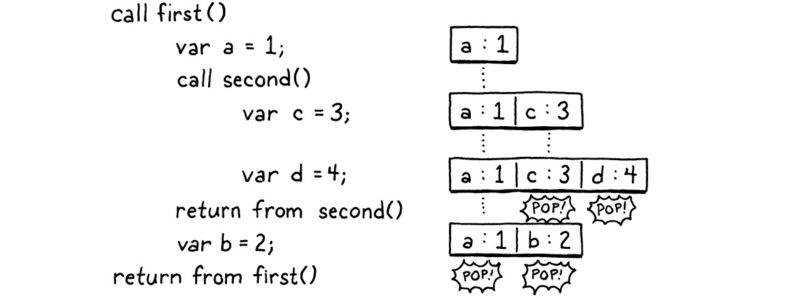
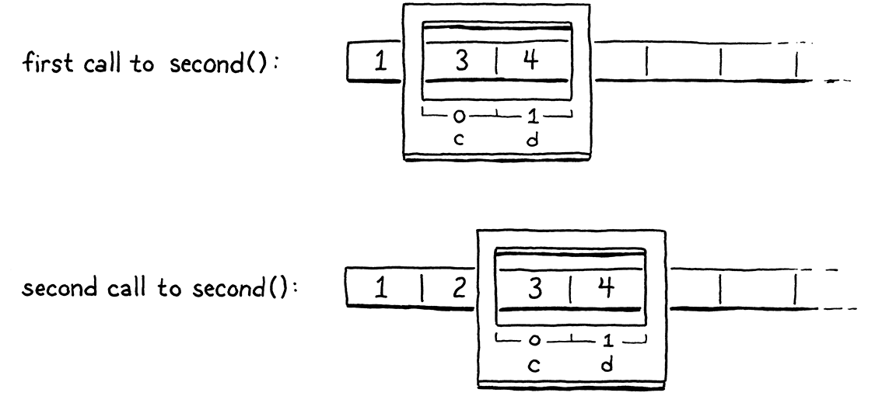
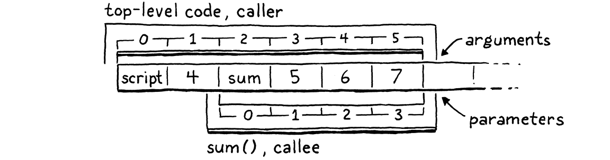
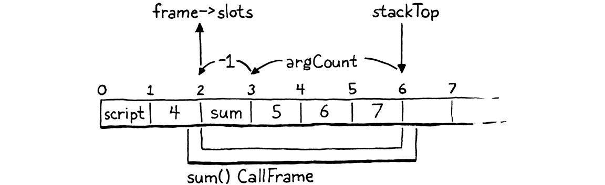
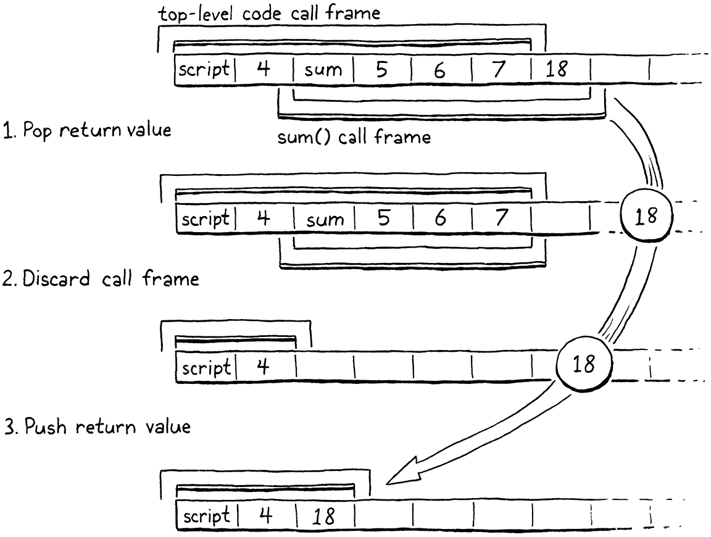

调用与函数
“计算机科学中的任何问题，都可以靠再加一个间接层来解决——唯独‘间接层太多’这个问题除外。”
——大卫·惠勒
这一章是个野兽。我总想把特性拆成一口能吃下的小块，但有时候你得把整餐咽下去。我们的下一个任务是函数。我们本可以从只有函数声明开始，但没法调用它们的话这没什么用。我们也可以先做调用，可又没东西可调。而 VM 里支撑这两者所需的全部运行时支持，如果不接到任何看得见的东西上，也没什么回报。所以我们要一次全做完。活儿很多，但做完会很爽。
24 . 1函数对象
VM 里最有趣的结构性改动围绕着栈展开。我们已经有一个栈用来放局部变量和临时值，所以已经 做了一半。但我们还没有调用栈的概念。在取得实质进展之前，得先把这个问题解决掉。不过先 写点代码吧。我总觉得一动手就会感觉好起来。没有某种函数表示，我们就做不了多少事，所以从这儿 开始。从 VM 的角度看，函数是什么？
函数有一个可以执行的函数体，也就是说需要一些字节码。我们可以把整个程序连同它所有的函数 声明都编译进一个大得不得了的 Chunk 里。每个函数持有一个指针，指向 Chunk 内部自己那段代码 的第一条指令。
编译到本地代码大致就是这么做的，最后你会得到一整块实心块的机器码。但对我们的字节码 VM 来说，可以做得稍微高层一点。我觉得更干净的模型是给每个函数自己的 Chunk。我们还需要一些 别的元数据，那就干脆现在全塞进一个结构体里。
struct Obj* next; };
加在结构体 Obj 之后
typedef struct { Obj obj; int arity; Chunk chunk; ObjString* name; } ObjFunction;
struct ObjString {
函数在 Lox 里是一等的，所以它们得是真正的 Lox 对象。于是 ObjFunction 拥有所有对象类型
共享的那个 Obj 头部。arity 字段存放函数期望的形参个数。除代码块外，我们还存放
函数的名字。它在报告可读的运行时错误时会派上用场。
这是「object」模块第一次需要引用 Chunk，所以我们加一个 include。
#include "common.h"
#include "chunk.h"
#include "value.h"
和处理字符串时一样，我们定义一些访问器，好让 Lox 函数在 C 里更好用。算是穷人版的面向对象。 首先，我们声明一个用来创建新 Lox 函数的 C 函数。
uint32_t hash; };
加在结构体 ObjString 之后
ObjFunction* newFunction();
ObjString* takeString(char* chars, int length);
实现在这边：
加在 allocateObject() 之后
ObjFunction* newFunction() { ObjFunction* function = ALLOCATE_OBJ(ObjFunction, OBJ_FUNCTION); function->arity = 0; function->name = NULL; initChunk(&function->chunk); return function; }
我们用老朋友 ALLOCATE_OBJ() 分配内存并初始化对象头部，好让 VM 知道它是哪种类型的对象。
我们不像处理 ObjString 那样传入参数来初始化函数，而是把函数置成一种空白状态——元数为零、
没有名字、没有代码。这些等函数创建好之后再填。
既然有了新的一类对象，就需要在枚举里加一个新的对象类型。
typedef enum {
在枚举 ObjType 内
OBJ_FUNCTION,
OBJ_STRING, } ObjType;
当我们用完一个函数对象，必须把它借来的那些位还回操作系统。
switch (object->type) {
在 freeObject() 内
case OBJ_FUNCTION: { ObjFunction* function = (ObjFunction*)object; freeChunk(&function->chunk); FREE(ObjFunction, object); break; }
case OBJ_STRING: {
这个 switch 分支除了释放函数自己，还负责释放它拥有的其他任何内存。函数拥有自己的 代码块，所以我们调用 Chunk 那个类似析构函数的函数。
Lox 允许你打印任何对象，而函数是一等对象，所以我们也得处理它们。
switch (OBJ_TYPE(value)) {
在 printObject() 内
case OBJ_FUNCTION: printFunction(AS_FUNCTION(value)); break;
case OBJ_STRING:
它调用了这个：
加在 copyString() 之后
static void printFunction(ObjFunction* function) { printf("<fn %s>", function->name->chars); }
既然函数知道自己的名字，报上姓名也无妨。
最后，我们有几个把值转成函数的宏。首先，确保你的值确实是个函数。
#define OBJ_TYPE(value) (AS_OBJ(value)->type)
#define IS_FUNCTION(value) isObjType(value, OBJ_FUNCTION)
#define IS_STRING(value) isObjType(value, OBJ_STRING)
假定这里求值为真，你就可以用这个把该 Value 安全地转型成 ObjFunction 指针：
#define IS_STRING(value) isObjType(value, OBJ_STRING)
#define AS_FUNCTION(value) ((ObjFunction*)AS_OBJ(value))
#define AS_STRING(value) ((ObjString*)AS_OBJ(value))
这样一来，我们的对象模型就知道怎么表示函数了。我感觉热起来了。准备好来点更难的吗？
24 . 2编译成函数对象
目前我们的编译器假定自己总是在编译到同一个代码块里。随着每个函数的代码各自住在独立的 代码块里，这事变复杂了。当编译器碰到一条函数声明时，它需要在编译函数体时把代码发射进那个 函数的代码块。在函数体的末尾，编译器需要回到它之前在用的那个代码块。
对函数体内部的代码来说这没问题，但对不在函数体里的代码呢？Lox 程序的「顶层」也是命令式
代码，我们也需要一个代码块来编译它。我们可以把那层顶层代码也放进一个自动定义的函数里，
这样就能同时简化编译器和 VM。这样编译器永远处在某个函数体内部，VM 也永远通过调用一个函数
来运行代码。就好像整个程序都被包在一个隐式的 main() 函数里。
那么在讲到用户定义的函数之前，我们先来做这个重组，以支持那个隐式的顶层函数。它从 Compiler 结构体开始。它不再直接指向一个供编译器写入的 Chunk，而是持有一个对正在构建的 函数对象的引用。
typedef struct {
在结构体 Compiler 内
ObjFunction* function; FunctionType type;
Local locals[UINT8_COUNT];
我们还有一个小小的 FunctionType 枚举。这让编译器能分辨自己是在编译顶层代码，还是在编译某个 函数的函数体。编译器的大部分代码并不关心这个——所以它才是个有用的抽象——但在一两个地方 这个区别是有意义的。我们后面会碰到一处。
加在结构体 Local 之后
typedef enum { TYPE_FUNCTION, TYPE_SCRIPT } FunctionType;
编译器里每一处原本在写 Chunk 的地方，现在都得经过那个 function 指针。幸运的是，很多章以前，我们就把访问代码块的动作封装进了 currentChunk() 函数。
我们只需要改它，编译器的其余部分就皆大欢喜了。
Compiler* current = NULL;
加在变量 current 之后
替换 5 行
static Chunk* currentChunk() { return ¤t->function->chunk; }
static void errorAt(Token* token, const char* message) {
当前代码块永远是我们正在编译的那个函数所拥有的代码块。接下来，我们得真的把这个函数创建出来。 以前 VM 会把一个 Chunk 传给编译器，由编译器往里填代码。现在，改成由编译器创建并返回一个 函数，里面装着编译好的用户程序顶层代码——这是我们目前唯一支持的。
24 . 2 . 1在编译期创建函数
我们从 compile() 开始把这件事贯穿下去，它是进入编译器的主入口。
Compiler compiler;
在 compile() 内
替换 2 行
initCompiler(&compiler, TYPE_SCRIPT);
parser.hadError = false;
编译器初始化的方式有一堆改动。首先，初始化新的 Compiler 字段。
在函数 initCompiler() 内
替换 1 行
static void initCompiler(Compiler* compiler, FunctionType type) { compiler->function = NULL; compiler->type = type;
compiler->localCount = 0;
然后分配一个新的函数对象，供编译输出进去。
compiler->scopeDepth = 0;
在 initCompiler() 内
compiler->function = newFunction();
current = compiler;
在编译器里创建 ObjFunction 也许显得有些奇怪。函数对象是函数的运行时表示，可我们现在 是在编译期创建它。理解这件事的方式是：函数有点像字符串或数字字面量。它在编译期世界和运行时 世界之间架了一座桥。等我们讲到函数声明的时候，那些东西才是字面量——它们是一种 产生内建类型值的记法。所以编译器在编译期间创建函数对象。 然后到了运行时，只管调用它们。
这里还有一段奇怪的代码：
current = compiler;
在 initCompiler() 内
Local* local = ¤t->locals[current->localCount++]; local->depth = 0; local->name.start = ""; local->name.length = 0;
}
记住，编译器的 locals 数组记录着哪些栈槽位对应哪些局部变量或临时值。从现在起，编译器会
隐式占用 0 号栈槽位供 VM 内部使用。我们给它一个空名字，这样用户就写不出引用它的标识符。
等它变得有用时我再解释这是怎么回事。
这就是初始化这一侧。当我们编译完一段代码时，另一端也需要几处改动。
在函数 endCompiler() 内
替换 1 行
static ObjFunction* endCompiler() {
emitReturn();
以前 interpret() 调用编译器时，会传进去一个供写入的 Chunk。既然现在编译器自己创建函数
对象，我们就返回那个函数。在这里我们从当前编译器把它取出来：
emitReturn();
在 endCompiler() 内
ObjFunction* function = current->function;
#ifdef DEBUG_PRINT_CODE
然后这样把它返回给 compile()：
#endif
在 endCompiler() 内
return function;
}
现在正适合在这个函数里再做一处微调。之前我们加了一些诊断代码，让 VM 把反汇编出来的字节码 打印出来，好让我们调试编译器。既然生成的代码块现在被包在函数里，就得把它改成继续可用。
#ifdef DEBUG_PRINT_CODE
if (!parser.hadError) {
在 endCompiler() 内
替换 1 行
disassembleChunk(currentChunk(), function->name != NULL ? function->name->chars : "<script>");
} #endif
注意到这里检查函数的名字是不是 NULL 吗？用户定义的函数都有名字，但我们为顶层代码创建的那
个隐式函数没有，即使在我们自己的诊断代码里也得优雅地处理这种情况。说到诊断代码：
static void printFunction(ObjFunction* function) {
在 printFunction() 内
if (function->name == NULL) { printf("<script>"); return; }
printf("<fn %s>", function->name->chars);
用户没法拿到顶层函数的引用去打印它，但我们那个打印整个栈的 DEBUG_TRACE_EXECUTION 诊断代码能，而且确实会那么做。
上浮一层到 compile()，我们调整它的签名。
#include "vm.h"
在函数 compile() 内
替换 1 行
ObjFunction* compile(const char* source);
#endif
它不再接收代码块，而是返回一个函数。实现那边：
在函数 compile() 内
替换 1 行
ObjFunction* compile(const char* source) {
initScanner(source);
终于到了真正的代码。我们把这个函数的最后改成这样：
while (!match(TOKEN_EOF)) {
declaration();
}
在 compile() 内
替换 2 行
ObjFunction* function = endCompiler(); return parser.hadError ? NULL : function;
}
我们从编译器那里拿到函数对象。如果没有编译错误，就返回它。否则，我们返回 NULL 来表示
错误。这样一来，VM 就不会去执行一个可能含有非法字节码的函数。
最终我们会把 interpret() 改成适配 compile() 的新声明，但先还有别的改动要做。
24 . 3调用帧
是时候做一次大的概念跳跃了。在实现函数声明和调用之前，得先让 VM 准备好接待它们。有两个 主要问题需要考虑：
24 . 3 . 1分配局部变量
编译器为局部变量分配栈槽位。当一个程序里的局部变量分散在多个函数中时，这件事该怎么办？
一种做法是让它们彻底分开。每个函数在 VM 栈里拥有自己专属的一组槽位，永远归它所有， 哪怕这个函数当前没被调用。整个程序里的每个局部变量都会在 VM 里占一块只属于它自己的内存。
信不信由你，早期的编程语言实现确实是这么干的。最早的 Fortran 编译器为每个变量静态分配内存。 显而易见的问题是它效率极低。大多数函数在任何时刻都不正处于被调用的状态，所以替它们占着 用不上的内存纯属浪费。
不过更根本的问题是递归。有了递归，你可以同时「处于」对同一个函数的多次调用之中。每次调用 都需要自己的内存来放局部变量。在 jlox 里，我们靠每次调用 函数或进入一个块时都动态分配一份环境内存来解决。在 clox 里，我们不想让每次函数调用都背上 这种性能开销。
我们的做法则落在 Fortran 的静态分配与 jlox 的动态方案之间。VM 的值栈基于这样一个观察： 局部变量和临时值的行为是后进先出的。幸运的是，即使加上函数调用，这一点依然成立。举个例子：
fun first() { var a = 1; second(); var b = 2; } fun second() { var c = 3; var d = 4; } first();
一步步走过这个程序，看看每个时刻内存里有哪些变量：

执行流经这两次调用时，每个局部变量都遵守这样一条原则：后声明的变量，总是先于先声明的变量被丢弃。这一点跨越调用也成立。我们知道用完 c 和 d 会早于用完 a。
看来我们确实可以把局部变量分配到 VM 的值栈上。
理想情况下，我们仍然在编译期决定每个变量会放到栈上的哪里。这样操作变量的字节码指令 才能保持简单快速。在上面那个例子里，我们可以相当直接地想象出 这种做法，但并非总是行得通。考虑：
fun first() { var a = 1; second(); var b = 2; second(); } fun second() { var c = 3; var d = 4; } first();
在第一次调用 second() 时，c 和 d 会落进 1 号和 2 号槽位。但第二次调用时，我们需要给
b 腾出位置，所以 c 和 d 得待在 2 号和 3 号槽位。因此编译器无法跨函数调用为每个局部
变量钉死一个确切的槽位。但在某个函数内部，各局部变量的相对位置是固定的。
变量 d 永远紧跟在 c 后面。这就是关键所在。
函数被调用时，我们不知道栈顶会在哪里，因为它可能从不同的上下文被调用。但不管那个栈顶碰巧 在哪里，我们都清楚这个函数的所有局部变量相对于那个起点会在哪里。所以，和很多问题一样， 我们用一层间接来解决分配问题。
在每次函数调用的开头，VM 记录下该函数自己的局部变量从哪个槽位开始。那些操作局部变量的 指令，会按相对于这个位置的槽位索引来访问它们，而不是像现在这样相对于栈底。编译期我们算出 这些相对槽位；运行时我们把相对槽位加上本次函数调用的起始槽位，换算成绝对的栈索引。
这就像函数在更大的栈里获得了一个「窗口」或「帧」，可以在里面存放自己的局部变量。 调用帧的位置在运行时确定，但在那块区域之内、相对于它，我们知道东西在哪儿。

这个记录「函数局部变量从何处开始」的位置，其历史名称叫帧指针，因为它指向函数调用帧的 开头。有时你也听人叫它基址指针，因为它指向那个「函数所有变量都叠在其上」的基准栈槽位。
这是我们需要追踪的第一份数据。每次我们调用一个函数，VM 都会确定该函数的变量从哪个栈槽位 开始。
24 . 3 . 2返回地址
目前，VM 是靠递增 ip 字段在指令流中前进的。唯一有意思的行为在控制流指令附近，它们会给
ip 加上更大的偏移。调用一个函数相当直接——只要把 ip 设成指向那个函数代码块中的第一条
指令就行。但函数执行完之后呢？
VM 需要返回到调用它的那个代码块，并从紧挨着调用之后的那条 指令继续执行。所以对每一次函数调用，我们都需要追踪「调用完成时该跳回哪里」。这叫返回 地址，因为它就是 VM 在调用结束后要回到的那条指令的地址。
同样因为递归，一个函数可能对应多个返回地址，所以这是每次调用的属性，而不是函数 本身的属性。
24 . 3 . 3调用栈
于是，对每一次活着的函数调用——每一次尚未返回的调用——我们都需要追踪该函数的局部变量从 栈上何处开始，以及调用方该从哪里恢复。我们把这些连同别的东西一起放进一个新结构体。
#define STACK_MAX 256
typedef struct { ObjFunction* function; uint8_t* ip; Value* slots; } CallFrame;
typedef struct {
一个 CallFrame 表示一次进行中的函数调用。slots 字段指向 VM 值栈里这个函数可以使用的第一个
槽位。我给它起了个复数名字，因为——拜 C 那个古怪的「指针差不多就是数组」特性所赐——我们会
把它当数组用。
返回地址的实现和我上面描述的稍有不同。我们不是把返回地址存在被调用方的帧里，而是让调用方
存下自己的 ip。当我们从一个函数返回时，VM 会跳到调用方 CallFrame 的 ip 并从那里恢复。
我还把一个指向被调用函数的指针塞在了这里。我们会用它查常量，以及做另外几件事。
每次函数被调用，我们都创建这样一个结构体。我们本可以在堆上动态
分配它们，但那样太慢。函数调用是核心操作，所以必须尽可能快。幸运的是，我们可以做和变量
那个一样的观察：函数调用具有栈语义。如果 first() 调用了 second()，那么对 second() 的
调用会在 first() 完成之前完成。
于是，在 VM 那边，我们预先创建一个 CallFrame 结构体数组，把它当成栈来用，就像对值数组做的那样。
typedef struct {
在结构体 VM 内
替换 2 行
CallFrame frames[FRAMES_MAX]; int frameCount;
Value stack[STACK_MAX];
这个数组取代了原先直接放在 VM 里的 chunk 和 ip 字段。现在每个 CallFrame 都有自己的 ip
和指向它正在执行的 ObjFunction 的指针。从那里我们就能拿到该函数的代码块。
VM 里新增的 frameCount 字段存放 CallFrame 栈的当前高度——也就是进行中的函数调用数量。为了
让 clox 保持简单，数组容量是固定的。这意味着，和许多语言实现一样，我们能处理的最大调用
深度是有限的。对 clox 来说，它定义在这里：
#include "value.h"
替换 1 行
#define FRAMES_MAX 64 #define STACK_MAX (FRAMES_MAX * UINT8_COUNT)
typedef struct {
我们还以它为基准重新定义了值栈的大小，以确保即使在非常深的 调用树上也有足够的栈槽位。VM 启动时，CallFrame 栈是空的。
vm.stackTop = vm.stack;
在 resetStack() 内
vm.frameCount = 0;
}
「vm.h」这个头文件需要访问 ObjFunction，所以我们加一个 include。
#define clox_vm_h
替换 1 行
#include "object.h"
#include "table.h"
现在可以转到 VM 的实现文件了。前面还有一堆苦力活。我们已经把 ip 从 VM 结构体挪进了
CallFrame。VM 里每一处碰到 ip 的代码都得改。还有，那些按栈槽位访问局部变量的指令也得改成
相对于当前 CallFrame 的 slots 字段来访问。
我们从顶部开始一路推过去。
static InterpretResult run() {
在 run() 内
替换 4 行
CallFrame* frame = &vm.frames[vm.frameCount - 1]; #define READ_BYTE() (*frame->ip++) #define READ_SHORT() \ (frame->ip += 2, \ (uint16_t)((frame->ip[-2] << 8) | frame->ip[-1])) #define READ_CONSTANT() \ (frame->function->chunk.constants.values[READ_BYTE()])
#define READ_STRING() AS_STRING(READ_CONSTANT())
首先，我们把当前最顶层的 CallFrame 存进字节码执行主函数里的一个局部
变量。然后把那些访问字节码的宏换成经由该变量访问 ip 的版本。
接下来是每一条需要好好照顾的指令。
case OP_GET_LOCAL: {
uint8_t slot = READ_BYTE();
在 run() 内
替换 1 行
push(frame->slots[slot]);
break;
以前，OP_GET_LOCAL 直接从 VM 的栈数组里读给定的局部槽位，也就是说它是从栈底开始索引槽位。
现在它访问的是当前帧的 slots 数组，也就是从该帧开头起算的编号槽位。
给局部变量赋值也是同一个做法。
case OP_SET_LOCAL: {
uint8_t slot = READ_BYTE();
在 run() 内
替换 1 行
frame->slots[slot] = peek(0);
break;
跳转指令过去修改的是 VM 的 ip 字段。现在它们对当前帧的 ip 做同样的事。
case OP_JUMP: {
uint16_t offset = READ_SHORT();
在 run() 内
替换 1 行
frame->ip += offset;
break;
条件跳转也一样：
case OP_JUMP_IF_FALSE: {
uint16_t offset = READ_SHORT();
在 run() 内
替换 1 行
if (isFalsey(peek(0))) frame->ip += offset;
break;
还有我们那条向后跳的循环指令：
case OP_LOOP: {
uint16_t offset = READ_SHORT();
在 run() 内
替换 1 行
frame->ip -= offset;
break;
我们有一段诊断代码会在每条指令执行时把它打印出来，帮我们调试 VM。这也得适配新结构。
printf("\n");
在 run() 内
替换 2 行
disassembleInstruction(&frame->function->chunk, (int)(frame->ip - frame->function->chunk.code));
#endif
它不再接收 VM 的 chunk 和 ip 字段，而是从当前 CallFrame 里读。
你知道吗，其实也没那么难。大部分指令只是用了那些宏，所以压根不用动。接下来我们上浮一层到
调用 run() 的那段代码。
InterpretResult interpret(const char* source) {
在 interpret() 内
替换 10 行
ObjFunction* function = compile(source); if (function == NULL) return INTERPRET_COMPILE_ERROR; push(OBJ_VAL(function)); CallFrame* frame = &vm.frames[vm.frameCount++]; frame->function = function; frame->ip = function->chunk.code; frame->slots = vm.stack;
InterpretResult result = run();
我们终于可以把先前编译器的改动和刚刚做的后端改动接起来了。首先，我们把源代码交给编译器。
它给我们返回一个包含编译好的顶层代码的新 ObjFunction。如果我们拿回 NULL，说明出了编译期
错误，编译器已经报告过了。那种情况下我们就退出，因为什么都跑不了。
否则，我们把这个函数压进栈里，并准备好一个初始 CallFrame 来执行它的代码。现在你能看出编译器
为什么要预留 0 号栈槽位了——它存放被调用的函数。在新的 CallFrame 里，我们指向该函数、把它的
ip 初始化为指向函数字节码的开头，并让它的栈窗口从 VM 值栈的最底部开始。
这就让解释器准备好开始执行代码了。执行完毕后，VM 过去会释放那个硬编码的代码块。既然那段
代码现在由 ObjFunction 拥有，我们就不必这么做了，所以 interpret() 的结尾现在只是这样：
frame->slots = vm.stack;
在 interpret() 内
替换 4 行
return run();
}
最后一处引用旧 VM 字段的代码是 runtimeError()。本章后面我们还会回来看它，但现在先改成这样：
fputs("\n", stderr);
在 runtimeError() 内
替换 2 行
CallFrame* frame = &vm.frames[vm.frameCount - 1]; size_t instruction = frame->ip - frame->function->chunk.code - 1; int line = frame->function->chunk.lines[instruction];
fprintf(stderr, "[line %d] in script\n", line);
它不再直接从 VM 读取代码块和 ip，而是从栈顶的 CallFrame 里取。这应该能让函数重新工作起来，
行为和以前一样。
假定上面这些都做对了，我们就把 clox 变回了可运行的状态。启动它，它的表现是……和之前完全 一样。我们还没加任何新特性，所以多少有点让人失望。但整套基础设施现在都在了，也已经准备好 让我们使用。开始享用吧。
24 . 4函数声明
在我们能做调用表达式之前，得先有东西可调，所以先做函数声明。这个 fun 是以关键字开头的。
static void declaration() {
在 declaration() 内
替换 1 行
if (match(TOKEN_FUN)) { funDeclaration(); } else if (match(TOKEN_VAR)) {
varDeclaration();
它把控制权交给这里：
加在 block() 之后
static void funDeclaration() { uint8_t global = parseVariable("Expect function name."); markInitialized(); function(TYPE_FUNCTION); defineVariable(global); }
函数是一等值，而一条函数声明只是创建出一个函数、并存进一个新声明的变量里。所以我们像解析 任何其他变量声明那样解析这个名字。顶层的函数声明会把函数绑定到一个全局变量上。在一个块 内部或其他函数内部，函数声明会创建一个局部变量。
在前面某一章里，我解释过变量是分两个阶段定义的。这确保你没法在一个变量自己的 初始化器里访问它的值。那会很糟，因为那个变量还没有值。
函数没有这个问题。函数在自己的函数体里引用自己的名字是安全的。在它被完整定义之前，你无法 调用它并执行它的函数体，所以你永远不会看到变量处于未初始化状态。从实用角度看，允许 这么做是为了支持递归的局部函数。
为了让这件事成立，我们在编译完名字、还没编译函数体的时候，就把这条函数声明的变量标记为 「已初始化」。这样名字就能在函数体里被引用而不会报错。
不过我们确实还需要一个检查。
static void markInitialized() {
在 markInitialized() 内
if (current->scopeDepth == 0) return;
current->locals[current->localCount - 1].depth =
以前我们只在已经确定身处局部作用域时才调用 markInitialized()。现在，顶层的函数声明也会
调用这个函数。那种情况下没有局部变量可以标记为已初始化——函数是被绑定到一个全局变量上的。
接下来，我们编译函数本身——它的形参列表和块函数体。为此我们用一个独立的辅助函数。这个
辅助函数生成的代码会把得到的函数对象留在栈顶。之后我们调用 defineVariable()，把这个函数
存回我们为它声明的那个变量里。
我把编译形参和函数体的代码单独拆出来，是因为稍后解析类里的方法声明时还要再用它。我们逐步 搭建，先从这段开始：
加在 block() 之后
static void function(FunctionType type) { Compiler compiler; initCompiler(&compiler, type); beginScope(); consume(TOKEN_LEFT_PAREN, "Expect '(' after function name."); consume(TOKEN_RIGHT_PAREN, "Expect ')' after parameters."); consume(TOKEN_LEFT_BRACE, "Expect '{' before function body."); block(); ObjFunction* function = endCompiler(); emitBytes(OP_CONSTANT, makeConstant(OBJ_VAL(function))); }
眼下我们先不管形参。我们解析一对空的圆括号，然后是函数体。函数体以一个左花括号开头，就在这里
解析。然后我们调用已有的 block() 函数，它知道怎么编译一个块的其余部分，包括收尾的花括号。
24 . 4 . 1一栈编译器
有意思的部分是上面和下面那些跟编译器有关的东西。Compiler 结构体存放诸如「哪些槽位归哪些 局部变量所有」「我们当前嵌了几层块」之类的数据。这些全都是针对单个函数的。但现在前端需要 处理编译彼此嵌套的多个函数。
管理这事的诀窍是：为每个正在编译的函数创建一个独立的 Compiler。我们开始编译一条函数声明时，
就在 C 栈上创建一个新 Compiler 并初始化它。initCompiler() 把这个 Compiler 设为当前的那个。
然后在编译函数体时，所有会发射字节码的函数都写进新 Compiler 那个函数所拥有的代码块。
在到达函数块函数体的末尾之后，我们调用 endCompiler()。它交出刚编译出来的函数对象，我们
把它作为常量存进外围函数的常量表。可是等等，我们怎么回到外围函数去？initCompiler()
覆盖当前编译器指针的时候，我们把它弄丢了。
我们的办法是把这一串嵌套的 Compiler 结构体当成一个栈来对待。和 VM 里的 Value 栈、 CallFrame 栈不同，我们不用数组，而是用链表。每个 Compiler 都指回包围它的那个函数对应的 Compiler，一路指回顶层代码的根 Compiler。
} FunctionType;
加在枚举 FunctionType 之后
替换 1 行
typedef struct Compiler { struct Compiler* enclosing;
ObjFunction* function;
在 Compiler 结构体内部，我们没法引用 Compiler 的 typedef，因为那个声明还没结束。于是我们 给结构体本身起了个名字，用它来做这个字段的类型。C 真奇怪。
初始化新 Compiler 时，我们把那个即将不再是「当前」的 Compiler 捕获进这个指针。
static void initCompiler(Compiler* compiler, FunctionType type) {
在 initCompiler() 内
compiler->enclosing = current;
compiler->function = NULL;
然后当一个 Compiler 结束时，它通过把前一个编译器恢复成新的「当前」来把自己弹出栈。
#endif
在 endCompiler() 内
current = current->enclosing;
return function;
注意我们甚至都不需要动态分配这些 Compiler 结构体。每个都
作为局部变量存在 C 栈上——要么在 compile() 里，要么在 function() 里。Compiler 组成的
链表就穿行在 C 栈之中。我们之所以能有任意多个，是因为我们的编译器用递归下降，所以有了嵌套
函数声明时 function() 最终会递归调用自己。
24 . 4 . 2函数形参
不能传实参的话函数没什么用，所以我们接下来做形参。
consume(TOKEN_LEFT_PAREN, "Expect '(' after function name.");
在 function() 内
if (!check(TOKEN_RIGHT_PAREN)) { do { current->function->arity++; if (current->function->arity > 255) { errorAtCurrent("Can't have more than 255 parameters."); } uint8_t constant = parseVariable("Expect parameter name."); defineVariable(constant); } while (match(TOKEN_COMMA)); }
consume(TOKEN_RIGHT_PAREN, "Expect ')' after parameters.");
从语义上说，形参就是声明在函数体最外层词法作用域里的一个局部变量。于是我们可以直接用编译 器已有的「声明具名局部变量」支持来解析和编译形参。和带初始化器的局部变量不同，这里没有 任何代码去初始化形参的值。等我们在函数调用里做实参传递时，会看到它们是怎么被初始化的。
顺便，我们通过数一数解析了多少个形参来记下函数的元数。我们随函数一起存的另一份元数据是它
的名字。编译一条函数声明时，我们在解析完函数名之后立刻调用 initCompiler()。这意味着我们
当时就能从前一个词法单元里把名字取出来。
current = compiler;
在 initCompiler() 内
if (type != TYPE_SCRIPT) { current->function->name = copyString(parser.previous.start, parser.previous.length); }
Local* local = ¤t->locals[current->localCount++];
注意我们小心地为名字字符串做了一份拷贝。记住，词素直接指向原始的源代码字符串，而那个字符串 可能在代码编译完成后就被释放了。我们在编译器里创建的函数对象比编译器活得久，一直留到运行时。 所以它需要一份自己堆分配的名字字符串来留着。
真棒。现在我们能编译函数声明了，像这样：
fun areWeHavingItYet() { print "Yes we are!"; } print areWeHavingItYet;
只不过我们还没法用它们做任何有用的事。
24 . 5函数调用
到这一节末尾，我们会开始看到一些有意思的行为了。下一步是调用函数。我们通常不这么看，但
函数调用表达式多少有点像一个中缀的 ( 运算符。左边是一个被调用物的高优先级表达式——通常
就是一个单独的标识符。然后是中间的 (，后面跟着用逗号隔开的实参表达式，最后用一个 )
收尾。
这个古怪的文法视角，正好解释了怎么把语法挂到我们的解析表里。
ParseRule rules[] = {
加在 unary() 之后
替换 1 行
[TOKEN_LEFT_PAREN] = {grouping, call, PREC_CALL},
[TOKEN_RIGHT_PAREN] = {NULL, NULL, PREC_NONE},
当解析器在表达式后面遇到一个左括号时，它会分派到一个新的解析函数。
加在 binary() 之后
static void call(bool canAssign) { uint8_t argCount = argumentList(); emitBytes(OP_CALL, argCount); }
我们已经吃掉了 ( 词法单元，所以接下来用一个独立的 argumentList() 辅助函数来编译实参。那个
函数返回它编译的实参个数。每个实参表达式生成的代码都会把自己的值留在栈上，为这次调用做准备。
之后我们发射一条新的 OP_CALL 指令来调用函数，用实参个数作为操作数。
我们用这个老朋友来编译实参：
加在 defineVariable() 之后
static uint8_t argumentList() { uint8_t argCount = 0; if (!check(TOKEN_RIGHT_PAREN)) { do { expression(); argCount++; } while (match(TOKEN_COMMA)); } consume(TOKEN_RIGHT_PAREN, "Expect ')' after arguments."); return argCount; }
这段代码你在 jlox 里应该已经很熟悉了。只要每个表达式后面还有逗号，我们就一路嚼下去。 实参用完，我们就吃掉最后那个收尾的右括号，收工。
嗯，几乎是。回到 jlox，我们加过一个编译期检查，不让你给一次调用传超过 255 个实参。当时我说 那是因为 clox 也会需要一个类似的限制。现在你看出原因了——既然我们把实参个数塞进字节码的 单字节操作符里，就最多只能到 255。编译器这边也得检查一下。
expression();
在 argumentList() 内
if (argCount == 255) { error("Can't have more than 255 arguments."); }
argCount++;
前端到此为止。我们跳到后端，中间顺便声明一下新指令。
OP_LOOP,
在枚举 OpCode 内
OP_CALL,
OP_RETURN,
24 . 5 . 1把实参绑定到形参
在动手实现之前，我们得先想清楚调用点上栈是什么样子，以及从那里起我们该做什么。当我们执行到 调用指令时，被调用函数的表达式已经执行过了，紧跟着是它的实参。假设我们的程序是这样：
fun sum(a, b, c) { return a + b + c; } print 4 + sum(5, 6, 7);
如果我们在那次 sum() 调用的 OP_CALL 指令上把 VM 暂停，栈长这样：
站在 sum() 自身的角度想象一下。编译器编译 sum() 时自动分配了 0 号槽位，然后在它之后依次
为形参 a、b、c 分配了局部槽位。要完成一次对 sum() 的调用，我们需要一个初始化好的
CallFrame，里面放着被调用的函数和一块它可以使用的栈槽位区域。然后我们得把传给该函数的实参
收集起来，放进形参对应的那些槽位。
当 VM 开始执行 sum() 的函数体时，我们希望它的栈窗口长这样：
你注意到调用方准备好的实参槽位与被调用方需要的形参槽位，顺序完全对得上吗？多方便！ 这绝非巧合。当我讲每个 CallFrame 都有自己的栈内窗口时，从没说过这些窗口必须互不重叠。 没有什么能阻止我们让它们像这样重叠：

调用方的栈顶放着被调用的函数，紧跟着是按顺序排列的实参。我们知道 调用方在那些槽位之上没有别的槽位在用，因为求值实参表达式时需要的任何临时值这时都已经被丢弃 了。被调用方栈的底部与它重叠，好让形参槽位恰好与实参值已经在的位置对齐。
这意味着我们不需要做任何工作去「把实参绑定到形参」。既不用在槽位之间拷贝值，也不用跨环境 拷贝。实参已经在它们该在的地方了。就性能而言，这很难被击败。
是时候实现这条调用指令了。
}
在 run() 内
case OP_CALL: { int argCount = READ_BYTE(); if (!callValue(peek(argCount), argCount)) { return INTERPRET_RUNTIME_ERROR; } break; }
case OP_RETURN: {
我们需要知道被调用的函数和传给它的实参个数。后者从指令的操作数里拿到。它同时也告诉了我们
该从哪里找到函数：从栈顶往回数过那些实参槽位即可。我们把这些数据交给一个独立的 callValue()
函数。如果它返回 false，就说明这次调用导致了某种运行时错误。那种情况下我们中止解释器。
如果 callValue() 成功，CallFrame 栈上就会为被调用的函数压入一个新帧。run() 函数缓存了
一个指向当前帧的指针，所以我们得更新它。
return INTERPRET_RUNTIME_ERROR;
}
在 run() 内
frame = &vm.frames[vm.frameCount - 1];
break;
既然字节码分派循环是从那个 frame 变量里读的，那么当 VM 去执行下一条指令时，它会从刚被调用
的函数的 CallFrame 里读出 ip，并跳到它的代码。执行这次调用的工作从这儿开始：
加在 peek() 之后
static bool callValue(Value callee, int argCount) { if (IS_OBJ(callee)) { switch (OBJ_TYPE(callee)) { case OBJ_FUNCTION: return call(AS_FUNCTION(callee), argCount); default: break; // 不可调用的对象类型。 } } runtimeError("Can only call functions and classes."); return false; }
这里要做的事不止初始化一个新 CallFrame。因为 Lox 是动态类型的，你没法阻止用户写出这样的 坏代码：
var notAFunction = 123; notAFunction();
真发生了这种情况，运行时需要安全地报错并停止。所以我们做的第一件事是检查我们试图调用的那个 值的类型。如果它不是函数，我们就报错退出。否则，真正的调用发生在这里：
加在 peek() 之后
static bool call(ObjFunction* function, int argCount) { CallFrame* frame = &vm.frames[vm.frameCount++]; frame->function = function; frame->ip = function->chunk.code; frame->slots = vm.stackTop - argCount - 1; return true; }
这只做了初始化下一个 CallFrame 的事。它存下指向被调用函数的指针，并把该帧的 ip 指向函数
字节码的开头。最后它设置 slots 指针，给出这个帧在栈上的窗口。那里的算术确保了栈上已有的
实参与函数的形参对齐：

那个有点好笑的 - 1 是为了照顾 0 号栈槽位——编译器为我们稍后加方法时预留了它。形参从 1 号
槽位开始，所以我们让窗口早一个槽位开始，好和实参对齐。
继续之前，我们把新指令加进反汇编器。
return jumpInstruction("OP_LOOP", -1, chunk, offset);
在 disassembleInstruction() 内
case OP_CALL: return byteInstruction("OP_CALL", chunk, offset);
case OP_RETURN:
再来一次小小的绕路。现在我们有了一个顺手的函数来初始化 CallFrame，不妨用它来为执行顶层 代码准备好第一个帧。
push(OBJ_VAL(function));
在 interpret() 内
替换 4 行
call(function, 0);
return run();
好，现在回到调用……
24 . 5 . 2运行时错误检查
重叠的栈窗口能成立，靠的是这样一个假设：一次调用为函数的每个形参恰好传一个实参。但同样地， 因为 Lox 不是静态类型，一个糊涂的用户可能传多或传少。在 Lox 里我们把这定义为运行时错误， 报告方式如下：
static bool call(ObjFunction* function, int argCount) {
在 call() 内
if (argCount != function->arity) { runtimeError("Expected %d arguments but got %d.", function->arity, argCount); return false; }
CallFrame* frame = &vm.frames[vm.frameCount++];
相当直白。这就是为什么我们把每个函数的元数存在它的 ObjFunction 里面。
还有另一个错误要报告，不过它跟用户的糊涂相比更关乎我们自己。由于 CallFrame 数组大小固定， 我们得确保很深的调用链不会把它撑爆。
}
在 call() 内
if (vm.frameCount == FRAMES_MAX) { runtimeError("Stack overflow."); return false; }
CallFrame* frame = &vm.frames[vm.frameCount++];
实践中，如果一个程序接近了这个限制，那多半是某段失控的递归代码里有 bug。
24 . 5 . 3打印堆栈跟踪
既然说到运行时错误，我们花点时间让它们更有用。遇到运行时错误就停下来，对于防止 VM 以某种 未定义的方式崩溃烧毁是很重要的。但仅仅中止并不能帮用户修好那些导致了这个错误的代码。
辅助调试运行时故障的经典工具是堆栈跟踪——把程序死掉时仍在执行的每个函数都打印出来， 外加它死掉那一刻执行到了哪里。现在我们有了调用栈，又顺手把每个函数的名字都存了下来，于是可以在运行时错误把用户折腾得够呛时，把整个栈显示出来。它长这样：
fputs("\n", stderr);
在 runtimeError() 内
替换 4 行
for (int i = vm.frameCount - 1; i >= 0; i--) { CallFrame* frame = &vm.frames[i]; ObjFunction* function = frame->function; size_t instruction = frame->ip - function->chunk.code - 1; fprintf(stderr, "[line %d] in ", function->chunk.lines[instruction]); if (function->name == NULL) { fprintf(stderr, "script\n"); } else { fprintf(stderr, "%s()\n", function->name->chars); } }
resetStack(); }
打印完错误信息本身，我们从栈顶（最近被调用的那个函数）走到栈底
（顶层代码）。对每一帧，我们找出该帧函数内部与当前 ip 对应的行号，然后把行号连同函数名
一起打印出来。
比如说，如果你运行这个坏掉的程序：
fun a() { b(); } fun b() { c(); } fun c() { c("too", "many"); } a();
它会打印出：
Expected 0 arguments but got 2. [line 4] in c() [line 2] in b() [line 1] in a() [line 7] in script
看起来还不赖，是吧？
24 . 5 . 4从函数返回
我们快接近了。我们能调用函数，VM 也会执行它们。但我们还不能从它们返回。OP_RETURN
指令我们已经挂了挺久了，可它里面一直挂着某种临时代码，只为把我们从字节码循环里捞出来。
现在是给它一个正式实现的时候了。
case OP_RETURN: {
在 run() 内
替换 2 行
Value result = pop(); vm.frameCount--; if (vm.frameCount == 0) { pop(); return INTERPRET_OK; } vm.stackTop = frame->slots; push(result); frame = &vm.frames[vm.frameCount - 1]; break;
}
当一个函数返回值时，那个值会在栈顶。我们正要丢弃被调用函数整个的栈窗口，所以先把返回值弹出 来攥在手里。然后丢弃返回中那个函数的 CallFrame。如果那已经是最后一个 CallFrame，就说明我们 执行完了顶层代码。整个程序结束了，于是我们把主脚本函数从栈上弹出，然后退出解释器。
否则，我们丢弃被调用方用来放形参和局部变量的所有槽位。这里面包括调用方当初用来传实参的 同一批槽位。现在调用已经结束，调用方不再需要它们了。这就意味着栈顶最终正好落在返回中那个 函数的栈窗口开头处。
我们把返回值压回栈上那个更低的、新的位置。然后更新 run() 那个缓存的当前帧指针。就像我们
开始一次调用时一样，在字节码分派循环的下一轮迭代里，VM 会从那个帧读出 ip，执行就跳回
调用方，正好停在你离开的地方，紧跟在 OP_CALL 指令之后。

注意我们在这里假定函数确实返回了值，但一个函数也可以执行到函数体末尾而隐式返回：
fun noReturn() { print "Do stuff"; // No return here. } print noReturn(); // ???
这个也得正确处理。语言规定这种情况下隐式返回 nil。为此我们加上这个：
static void emitReturn() {
在 emitReturn() 内
emitByte(OP_NIL);
emitByte(OP_RETURN); }
编译器调用 emitReturn() 在函数体末尾写出 OP_RETURN 指令。而在那之前，它会先发射一条把
nil 压栈的指令。就这样，我们有了能用的函数调用！它们甚至还能接收形参！看起来我们几乎像是
知道自己在干什么。
24 . 6Return 语句
如果你想要一个返回隐式 nil 以外的东西的函数，就需要一条 return 语句。我们来把它搞定。
ifStatement();
在 statement() 内
} else if (match(TOKEN_RETURN)) { returnStatement();
} else if (match(TOKEN_WHILE)) {
当编译器看到 return 关键字时，它会走到这里：
加在 printStatement() 之后
static void returnStatement() { if (match(TOKEN_SEMICOLON)) { emitReturn(); } else { expression(); consume(TOKEN_SEMICOLON, "Expect ';' after return value."); emitByte(OP_RETURN); } }
返回值表达式是可选的，所以解析器会去找分号词法单元来判断有没有给出值。如果没有返回值，这条语句
隐式返回 nil。我们通过调用 emitReturn() 来实现，它会发射一条 OP_NIL 指令。否则，我们
编译返回值表达式，并用一条 OP_RETURN 指令返回它。
这就是我们已经实现过的同一条 OP_RETURN 指令——我们不需要任何新的运行时代码。这和 jlox
差别相当大。在那里，执行一条 return 语句时我们不得不用异常把栈退回去。那是因为你可以从
某堆嵌套块的深处返回。既然 jlox 是递归遍历 AST 的，那就意味着一堆我们需要逃出去的 Java
方法调用。
我们的字节码编译器把这一切都抹平了。解析阶段我们做递归下降，但运行时，VM 的字节码分派循环 是完全扁平的。C 这一层根本没有任何递归。所以返回——哪怕是从某堆嵌套块内部返回——就像从函数体 末尾返回一样简单。
不过我们还没完全干完。新的 return 语句带来一个要操心的编译错误。返回对从函数里返回很有用，
但 Lox 程序的顶层也是命令式代码。你不该能从那里返回。
return "What?!";
我们规定在任何函数之外出现 return 语句都是编译错误，实现方式如下：
static void returnStatement() {
在 returnStatement() 内
if (current->type == TYPE_SCRIPT) { error("Can't return from top-level code."); }
if (match(TOKEN_SEMICOLON)) {
这也是我们给编译器加上那个 FunctionType 枚举的原因之一。
24 . 7原生函数
我们的 VM 越来越强了。有了函数、调用、形参、返回。你可以定义很多不同的函数，并以各种 有意思的方式互相调用。但归根结底，它们其实做不了任何事。不管一个 Lox 程序有多复杂， 用户唯一看得到的操作只有打印。要增加更多能力，我们得把它们暴露给用户。
一个编程语言实现是靠原生函数跟外部世界打交道的。如果你希望用户能写出检查时间、读取 用户输入或访问文件系统的程序，我们就需要加入原生函数——从 Lox 可调用、但用 C 实现的函数—— 来暴露这些能力。
在语言层面，Lox 已经相当完整了——它有闭包、类、继承，还有其他一堆好玩的东西。它之所以让人 感觉像个玩具语言，很大程度上是因为它几乎没有任何原生能力。加上长长一串之后，它就能变成一门 真正的语言。
不过，啃完一大堆操作系统调用其实没什么教育意义。一旦你看懂了怎么把一段 C 代码绑定到 Lox， 道理就通了。但你确实得看一个，而且哪怕单个原生函数也要我们把 Lox 与 C 互操作的整套机制 搭出来。所以我们会走完这套流程，把苦活干完。然后，等做完之后，我们再加一个小原生函数， 只为证明它确实能用。
我们需要新机制，是因为从实现的角度看，原生函数和 Lox 函数不一样。它们被调用时不会压入 CallFrame，因为没有字节码代码可供那一帧指向。它们没有字节码代码块，而是以某种方式引用了 一段原生的 C 代码。
我们在 clox 里的做法，是把原生函数定义成一个完全不同的对象类型。
} ObjFunction;
加在结构体 ObjFunction 之后
typedef Value (*NativeFn)(int argCount, Value* args); typedef struct { Obj obj; NativeFn function; } ObjNative;
struct ObjString {
它的表示比 ObjFunction 简单——只有一个 Obj 头部和一个指向实现该原生行为的 C 函数的指针。 这个原生函数接收实参个数和一个指向栈上第一个实参的指针。它通过那个指针访问实参。干完之后， 它返回结果值。
和往常一样，新对象类型总带着一套附属品。要创建一个 ObjNative，我们声明一个类似构造函数 的函数。
ObjFunction* newFunction();
加在 newFunction() 之后
ObjNative* newNative(NativeFn function);
ObjString* takeString(char* chars, int length);
我们这样实现它：
加在 newFunction() 之后
ObjNative* newNative(NativeFn function) { ObjNative* native = ALLOCATE_OBJ(ObjNative, OBJ_NATIVE); native->function = function; return native; }
这个「构造函数」接收一个要包进 ObjNative 的 C 函数指针。它搭好对象头部并存下该函数。头部 这边，我们需要一个新的对象类型。
typedef enum {
OBJ_FUNCTION,
在枚举 ObjType 内
OBJ_NATIVE,
OBJ_STRING, } ObjType;
VM 还得知道怎么释放一个原生函数对象。
}
在 freeObject() 内
case OBJ_NATIVE: FREE(ObjNative, object); break;
case OBJ_STRING: {
这里没什么内容，因为 ObjNative 不拥有任何额外的内存。所有 Lox 对象支持的另一项能力是被打印。
break;
在 printObject() 内
case OBJ_NATIVE: printf("<native fn>"); break;
case OBJ_STRING:
为了支持动态类型，我们有一个宏来判断一个值是不是原生函数。
#define IS_FUNCTION(value) isObjType(value, OBJ_FUNCTION)
#define IS_NATIVE(value) isObjType(value, OBJ_NATIVE)
#define IS_STRING(value) isObjType(value, OBJ_STRING)
假定这个宏返回真，这个宏就从代表原生函数的 Value 里取出 C 函数指针：
#define AS_FUNCTION(value) ((ObjFunction*)AS_OBJ(value))
#define AS_NATIVE(value) \ (((ObjNative*)AS_OBJ(value))->function)
#define AS_STRING(value) ((ObjString*)AS_OBJ(value))
这一整套行头让 VM 能像对待任何其他对象那样对待原生函数。你可以把它们存进变量、到处传递、 给它们办生日派对等等。当然，我们真正关心的是调用它们——在调用表达式里把一个当作左操作数。
在 callValue() 那边，我们再加一个类型分支。
case OBJ_FUNCTION:
return call(AS_FUNCTION(callee), argCount);
在 callValue() 内
case OBJ_NATIVE: { NativeFn native = AS_NATIVE(callee); Value result = native(argCount, vm.stackTop - argCount); vm.stackTop -= argCount + 1; push(result); return true; }
default:
如果被调用的对象是个原生函数，我们就当场调用那个 C 函数。完全没必要去折腾 CallFrame 之类 的东西。我们只要把活交给 C，拿回结果，再塞回栈里。这让原生函数快到了极致。
这样一来，用户应该能调用原生函数了，可我们还没有任何原生函数可调。没有像外部函数接口 （FFI）这样的东西，用户无法定义自己的原生函数。那是我们作为 VM 实现者的活儿。我们先从 一个定义新原生函数、并暴露给 Lox 程序的辅助函数开始。
加在 runtimeError() 之后
static void defineNative(const char* name, NativeFn function) { push(OBJ_VAL(copyString(name, (int)strlen(name)))); push(OBJ_VAL(newNative(function))); tableSet(&vm.globals, AS_STRING(vm.stack[0]), vm.stack[1]); pop(); pop(); }
它接收一个 C 函数的指针，以及这个函数在 Lox 中将要使用的名字。我们把该函数包进一个 ObjNative，然后把那个对象存进一个同名的全局变量里。
你可能在想，为什么我们要把名字和函数在栈上压进去又弹出来。看起来很奇怪，对吧？这类事情
正是垃圾回收介入时你不得不操心的事。copyString() 和 newNative() 都会动态分配内存。
这意味着一旦我们有了 GC，它们就可能触发一次回收。如果真发生了，我们得确保回收器知道我们
还没用完那个名字和那个 ObjFunction，这样它才不会在我们脚下把它们释放掉。把它们存在值栈上
就达到了这个目的。
感觉很傻，但干完上面那一大堆活之后，我们只加了一个小原生函数。
加在变量 vm 之后
static Value clockNative(int argCount, Value* args) { return NUMBER_VAL((double)clock() / CLOCKS_PER_SEC); }
它返回程序开始运行以来经过的时间，单位是秒。拿它给 Lox 程序做基准测试很方便。在 Lox 里，
我们把它命名为 clock()。
initTable(&vm.strings);
在 initVM() 内
defineNative("clock", clockNative);
}
为了用到 C 标准库里的 clock() 函数，「vm」模块需要加一个 include。
#include <string.h>
#include <time.h>
#include "common.h"
要消化的材料可真不少，不过我们还是干完了！把这些输进去试试：
fun fib(n) { if (n < 2) return n; return fib(n - 2) + fib(n - 1); } var start = clock(); print fib(35); print clock() - start;
我们可以写一个效率低得惊人的递归斐波那契函数。更妙的是，我们还能测量它有多低效。 这当然不是算斐波那契数最聪明的方式。但它是一个检验语言实现对函数调用支持程度的好办法。 在我的机器上，在 clox 里跑这段比在 jlox 里跑快大约五倍。这可是相当大的改进。
习题
-
读写
ip字段是字节码循环里最频繁的操作之一。目前我们是通过一个指向当前 CallFrame 的 指针来访问它。这需要一层指针间接，可能会迫使 CPU 绕过缓存去访问主存。那可能是个实打实 的性能黑洞。理想情况下，我们会把
ip放在 CPU 的原生寄存器里。C 不让我们在不写内联汇编的前提下 强制这一点，但我们可以组织代码来鼓励编译器做这个优化。如果我们把ip直接存成一个 C 局部变量并标记为register，C 编译器很有可能答应我们这个客气的请求。这确实意味着我们得小心，在函数调用开始和结束时把局部
ip正确地写回对应的 CallFrame。 实现这个优化。写几个基准测试，看看它对性能的影响。你觉得多出来的代码复杂度值吗？ -
原生函数调用快，部分原因是我们没有校验这次调用传入的实参个数是否与函数期望的相同。 我们其实真该校验，否则一次实参不足的错误原生函数调用就可能让函数去读未初始化的内存。 加上元数检查。
-
目前，原生函数没有办法发出运行时错误。在一个真实的实现里，这是我们必须支持的，因为 原生函数生活在静态类型的 C 世界里，却被来自动态类型的 Lox 世界的程序调用。比如用户 试着给
sqrt()传一个字符串，那个原生函数就需要报运行时错误。扩展原生函数系统来支持这件事。这项能力会怎么影响原生调用的性能？
-
再加几个你觉得有用的原生函数。用它们写些程序。你加了些什么？它们对这门语言的手感和实用性有多大影响？